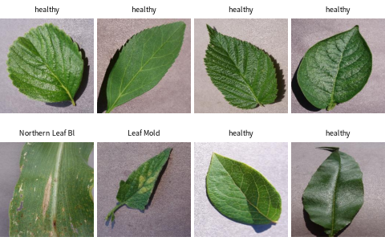

Hughes & Salathé (2015) PlantVillage 의 작은 판 (Hugging Face geraldmc/plantvillage-tiny): 잎 사진 1,900장, 작물 14종 × 병 = 38종류, 학습 · 시험 나눔 포함

| host | disease | class_label | split | leaf_grouped |
|---|---|---|---|---|
| Raspberry | healthy | Raspberry___healthy | train | True |
| Grape | Leaf blight (Isariopsis Leaf Spot) | Grape___Leaf_blight_(Isariopsis_Leaf_Spot) | train | True |
| Raspberry | healthy | Raspberry___healthy | train | True |
| Apple | Black rot | Apple___Black_rot | train | False |
| Soybean | healthy | Soybean___healthy | train | True |
| Corn (maize) | Northern Leaf Blight | Corn_(maize)___Northern_Leaf_Blight | train | False |
| 열 | 종류 | 빈칸 | 고유값 수 | 범위 · 대표값 |
|---|---|---|---|---|
| class_label | 글자 · 범주 | 0 | 38 | 가장 흔한 값: Apple___Apple_scab (2.6%) |
| class_idx | 숫자 | 0 | 38 | 0 ~ 37 (평균 18.5) |
| host | 글자 · 범주 | 0 | 14 | 가장 흔한 값: Tomato (26.3%) |
| disease | 글자 · 범주 | 0 | 21 | 가장 흔한 값: healthy (31.6%) |
| split | 글자 · 범주 | 0 | 2 | 가장 흔한 값: train (80.2%) |
| leaf_grouped | 참/거짓 | 0 | 2 | 참 67.8% |
| healthy | 참/거짓 | 0 | 2 | 참 31.6% |
| ① 한 행 | 잎 사진 한 장 |
| ② 입력 X | 색 분포 (채널별 히스토그램) |
| ③ 출력 y | 건강 / 병 (또는 38종류) |
| ④ 평가지표 | 정확도 · 병 재현율 |
| ⑤ 기준선 | 가장 흔한 쪽 |
문제를 정할 때 처음 채워 보는 칸들입니다. 여기서 끝이 아니라, 시험 데이터를 어떻게 나눌지 · 틀렸을 때 손해가 얼마인지 · 예측 시점에 정말 알 수 있는 값인지 같은 칸을 더 붙일수록 좋은 문제가 됩니다.
[healthy] baseline 69.4% -> random forest 88.6% [class_idx] baseline 1.1% -> random forest 57.2%
누가, 왜, 어떻게 만든 데이터인지 직접 확인해 보세요.
프로젝트 주제를 고를 때 참고하세요 (일반적인 예시).